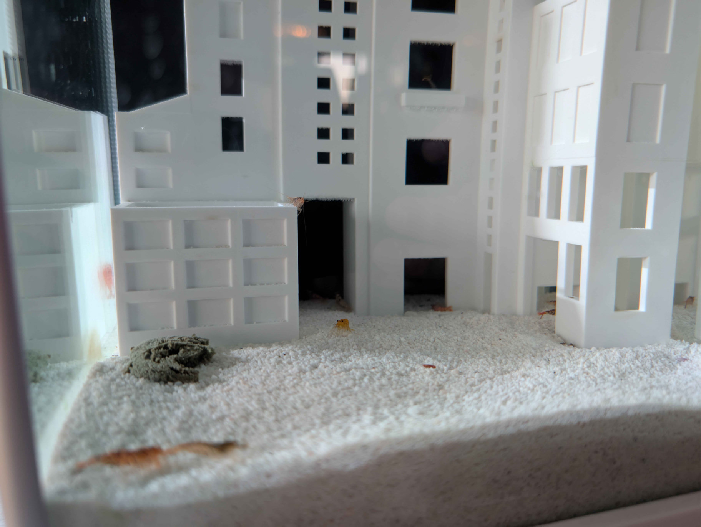
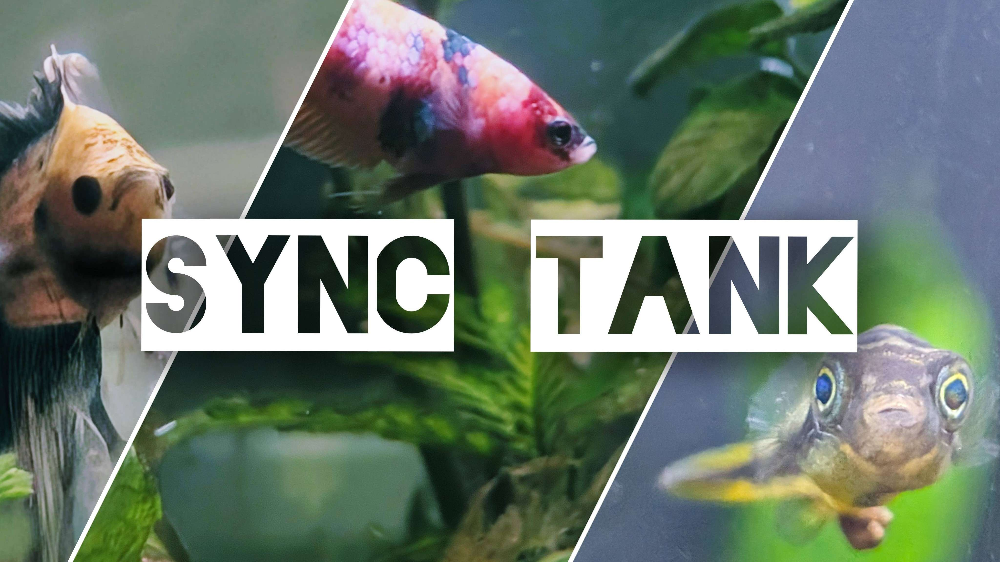
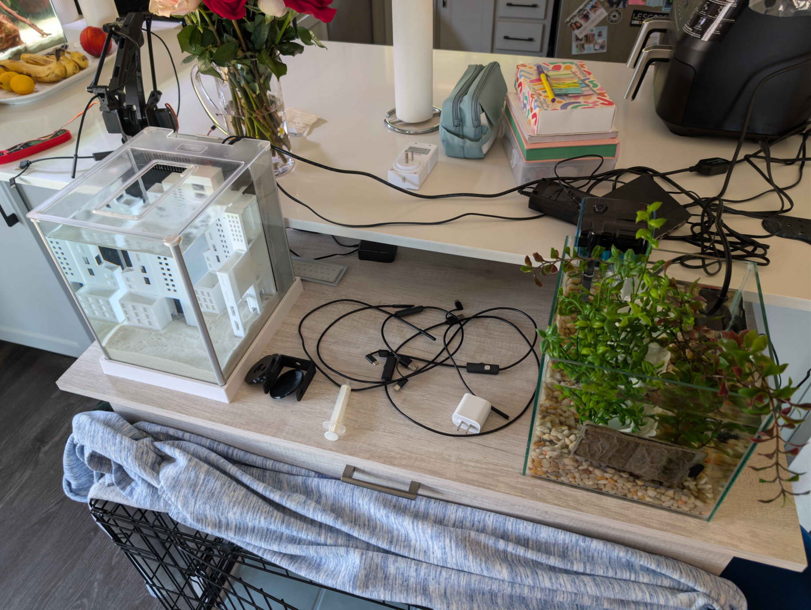
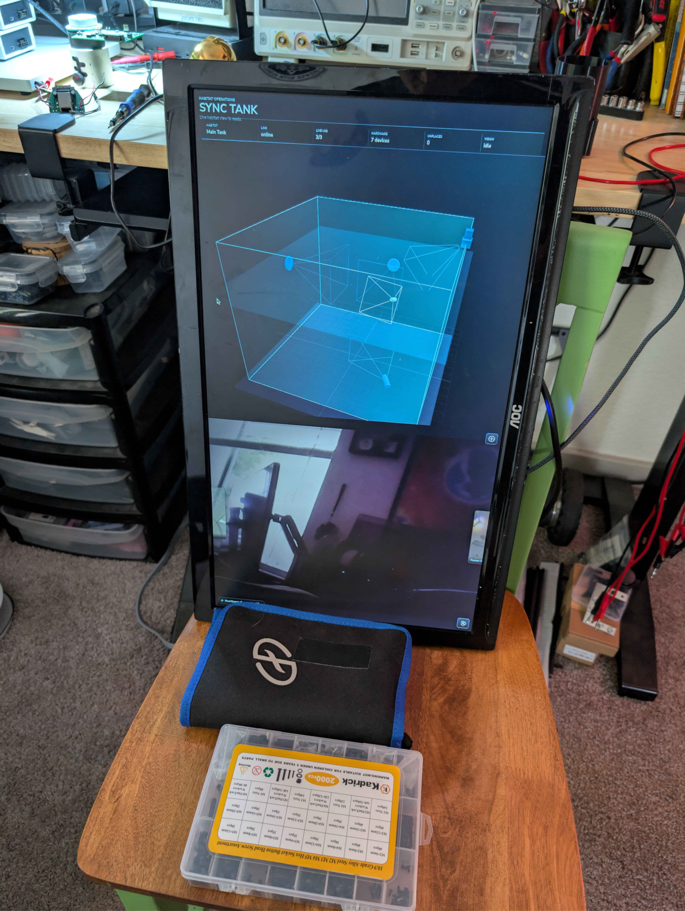
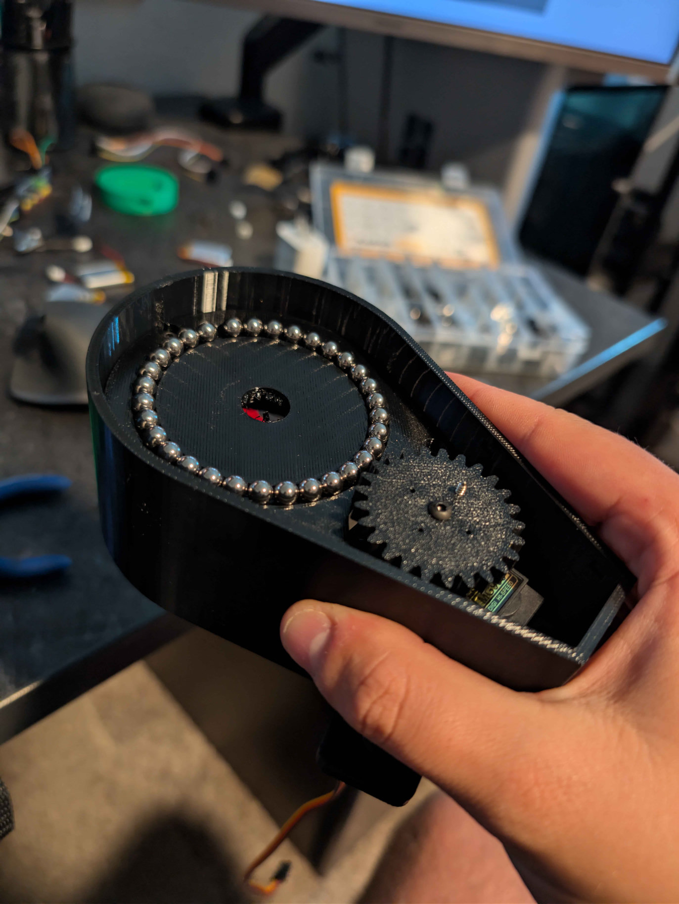

No. 001 / HABITATTINY TENANTS
{kind=link}

Shrimp City
Small-scale urban planning. Plenty of cover, recognizable landmarks, and neighbors with far too many legs.
Visit the neighborhood >>HABITAT EXPERIMENTTHE LITTLE UNDERWATER WORKSHOP
Aquarium oddities & open-source goods
FROM THE WORKBENCH: Small cameras. Curious creatures. Very enthusiastic cable management.

Peek into a hide. Map a tank. Wire up something interesting. We're connecting aquarium cameras, habitat models, and local computers so we can get to know our little worlds better.
Start with your own tank >> No Pi needed to experiment.

Small-scale urban planning. Plenty of cover, recognizable landmarks, and neighbors with far too many legs.
Visit the neighborhood >>HABITAT EXPERIMENT
A Pi for each tank, cameras in all the right places, and a shared local hub to bring the views together.
Meet the tank nodes >>PLANS & CODE / OPEN SOURCE
Bench testing, before the water: the early local prototype paired a tank model with a camera feed. Try planning camera positions and habitat landmarks in the separate photo-reference builder.
Open the tank builder >>SOFTWARE / OPEN SOURCE
Printed parts, bearings, and a motorized inspection camera platform. Future autonomy; supervised tinkering today.
Look inside the mechanism >>HARDWARE IN DEVELOPMENTPhotographs from actual builds and early prototypes. Hardware is a bring-your-own adventure.
Sync Tank is the whole project: connected aquariums, cameras, inspection tools, spatial maps, and observations. Two tank nodes are our starting point, with room to grow.
Flip through the full scrapbook & original SSTV experiments >>
The code is free to explore. Start with simulated tank nodes, or bring a Raspberry Pi and some cameras. Ordinary aquarium care comes first.
{kind=link}
{kind=link}
{kind=link}